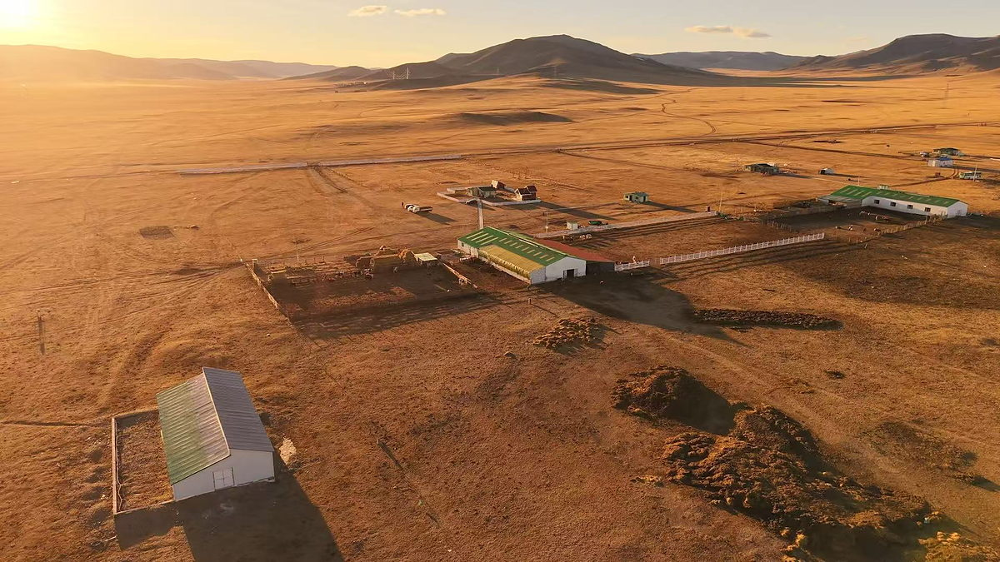
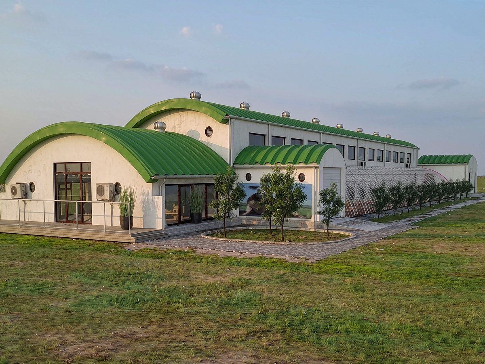
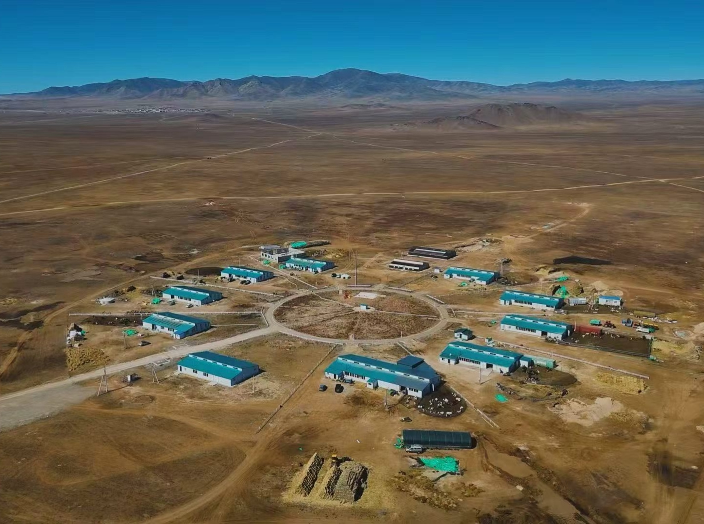
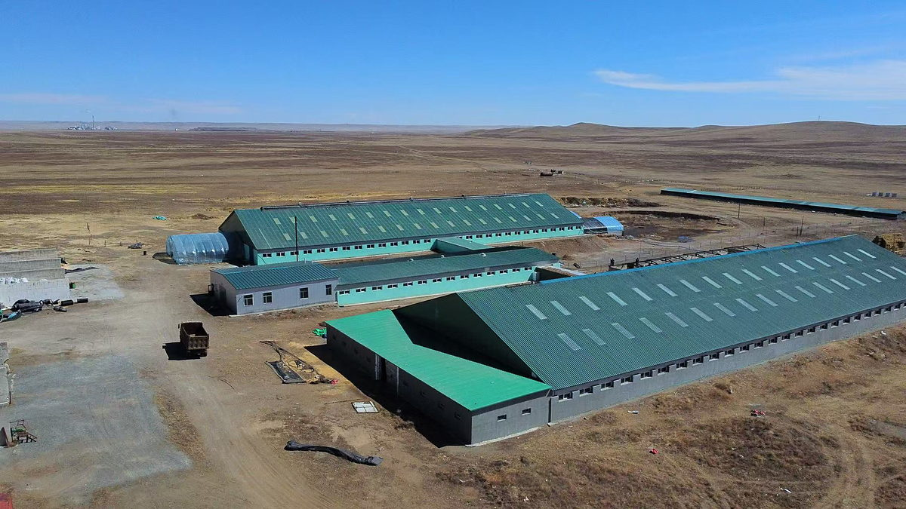
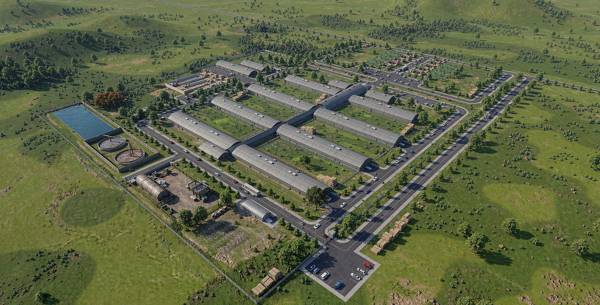
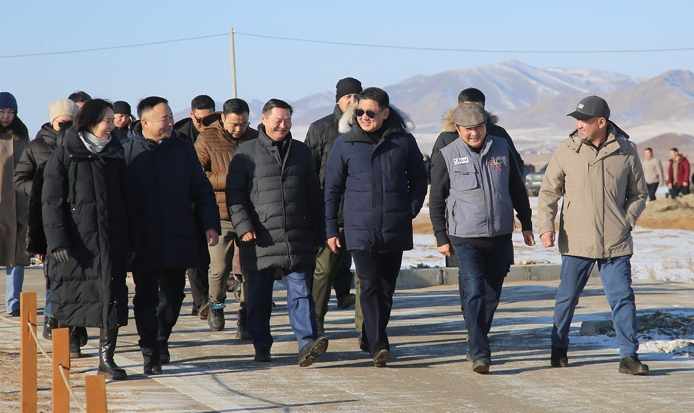

Before the company
French bloodlines
Montbéliarde heifers imported from France by air and land transport, the groundwork for everything that followed.
Нүүдэлчин Агро Ферм ХХК · Est. 2015
«Сайн сайхны дээд, сааль сүүний дээж»
Mongolia's pioneer of cluster dairy farming: 1,620 cows across four cluster farms in Töv province, supplying healthy, safe, high-quality milk to the nation.
Nuudelchin Agro Farm LLC is an independent national company founded in 2015 to modernize Mongolia's dairy sector and grow domestic supply by developing cluster household farming. In 2017 we opened Mongolia's first 400-cow cluster dairy farm, uniting 10 herder families under one sustainable system. Since then we have built three more clusters in Argalant, Bayankhangai and Bayan soums of Töv province, imported over 450 Montbéliarde cattle from France, and are building a 600-cow green farm complex in Ugtaaltsaidam, due to enter operation in 2027. We are now working to power our farms with green energy, turning cattle manure into energy and organic fertiliser.
To develop farming, intensive livestock husbandry and crop production, bring their resources together and, working closely with professional institutions, be the national company that provides complete farm services.
A solution for rural development: building intensive farming at home.
To bring Mongolia's dairy sector to international standards by producing healthy, safe, and high-quality raw materials that protect public health.
Montbéliarde heifers imported from France by air and land transport, the groundwork for everything that followed.
Nuudelchin Agro Farm LLC is established as an independent national company, set up to modernize Mongolia's dairy sector and grow domestic supply through cluster household farming.
Director J. Battugs speaks at the Mongolia Economic Forum on short- and long-term solutions to increase exports.
Mongolia's first 400-cow cluster dairy farm opens in Bayandelger soum, Töv province: 10 herder families, 40 cows each.
France–Mongolia animal husbandry cooperation seminar; further Montbéliarde imports bring the total to 450+. Second cluster farm: 480 cows in Argalant soum.
240-cow cluster farm established in Bayankhangai soum, Töv province.
H.E. Khurelsukh Ukhnaa, President of Mongolia, visits our operations on December 10 within the "Food Supply and Security" National Movement.
The 500-cow Bayan cluster, our largest to date, joins the group, and 400 Holstein cattle are imported from China, a first for Mongolia.
The 600-cow green farm complex in Ugtaaltsaidam soum enters operation. It is the largest project in the company's history, and the first designed around renewable energy from the outset.
Target: import 1,000 purebred cows and create a national select herd with government support.
The next step is to power the farms with renewable energy. Cattle manure is being turned into energy and organic fertiliser, returning nutrients to the fodder fields they came from and leaving the steppe as we found it.
Together we are solving the processing of cattle manure into renewable energy for the farm's own use.
Cattle slurry is processed into organic fertiliser, a green project to protect and restore the fodder fields and the degraded pasture around them.
At Ugtaaltsaidam, fodder, fertiliser and crop growing run on eco-friendly, circular, zero-waste technology. The farm is developing into a certified organic farm producing organic milk and dairy products.




Each cluster farm unites 10 herder households around shared infrastructure, veterinary care, and a guaranteed milk market. Every family works 10 hectares of its own land (2 with housing and green landscaping, 8 for pasture and fodder), and together the clusters supply 4–5 million litres of milk to domestic dairy factories every year.

A 600-cow green cluster farm complex rising in Ugtaaltsaidam soum, working towards entering operation in 2027. The project solves renewable energy, organic fertiliser, a shared milking parlour and fodder cultivation together, in one design.
The project opens the opportunity to own 20, 40 or 100 cows and become a full participant. Let us build this cluster farm complex together.
Planning, engineering, infrastructure, and equipment for modern dairy farms.
Business plans, investment models, herd management, and production technology.
Professional courses and hands-on programs for farmers and herders.
Formulation, pasture planning, and herd health support.
Collection, cooling, processing lines, quality control, and standards.
Connecting production to market for sustainable income.
Milking machines, cooling tanks, feeders, and complete farm equipment.
Healthy, safe, high-quality raw milk and processed dairy products.
Montbéliarde breed from France: 8,520 kg annual milk yield, 3.50% protein, 3.95% fat. Holstein cattle from China, and high-yield pregnant heifers for farm expansion.
Mineral lick block for livestock.
On December 10, 2024, His Excellency Khurelsukh Ukhnaa, President of Mongolia, visited Nuudelchin Agro Farm's operations within the framework of the "Food Supply and Security" National Movement, and was briefed on our achievements, milk production, and plans for future expansion.

"If this incentive is provided throughout the year, it will be a strong impetus for herder cooperatives to expand their operation."
"We aim to import 1,000 purebred cows for milk and meat, and request government support for creating a select herd by 2030."
The family of B. Orgil has farmed with us since 2024, with 18 cows and an average of 18 liters of milk sold per day. Orgil notes that the Government's milk incentive of MNT 1,000 per liter greatly supports farmers.
Source: MONTSAME News Agency
«Хөдөөгийн хөгжлийн шийдэл»: a rural development solution.
Room 402, Tsoma Office building, Sukhbaatar District, Ulaanbaatar, Mongolia